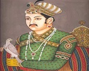
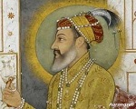

-
Babur (1530)
Babur, the founder of the largest dynasty India has ever seen-- the Mughals, was born on February 14, 1483 . Considered as one of the finest Mughal emperors, Babur succeeded in securing the dynasty's position in Delhi after a series of sultanates failed to consolidate their seats and his empire went on to rule for over 300 years in India. He passed away on December 26 in 1530. He was 48.
-
Akbar (1605)
Born on October 15, 1542 in Umarkot, India, Akbar the Great began his military conquests under the tutelage of a regent before claiming imperial power and expanding the Mughal Empire. Known as much for his inclusive leadership style as for his war mongering, Akbar ushered in an era of religious tolerance and appreciation for the arts. Akbar the Great died in 1605.
-
Aurangzeb (1707)
Aurangzeb (4 November 1618 – 3 March 1707) was the sixth emperor of the Mughal Empire. He ruled over most of the Indian subcontinent. His reign lasted for 49 years from 1658 until his death in 1707.